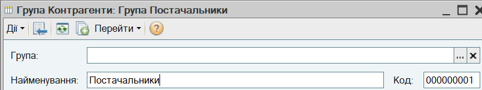
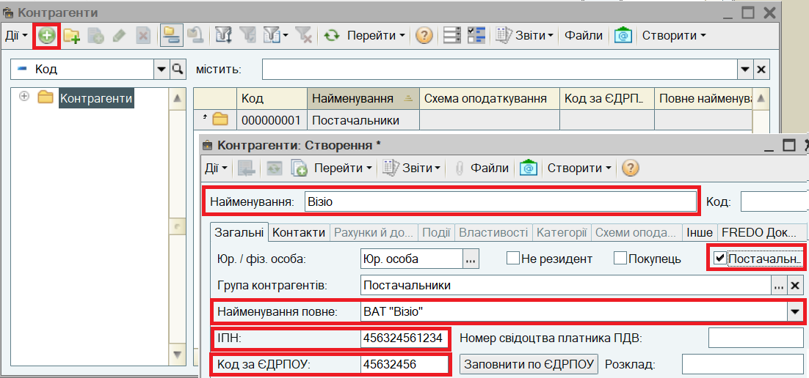
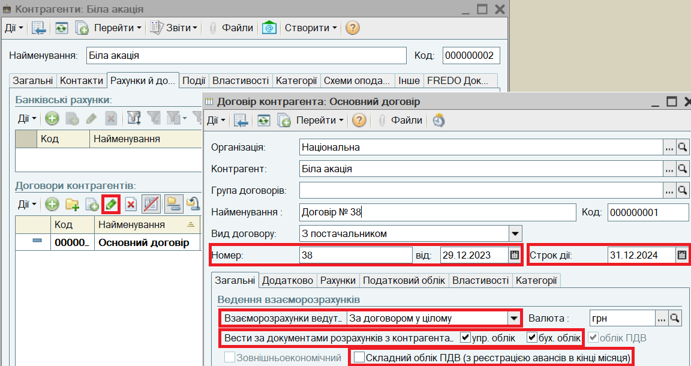
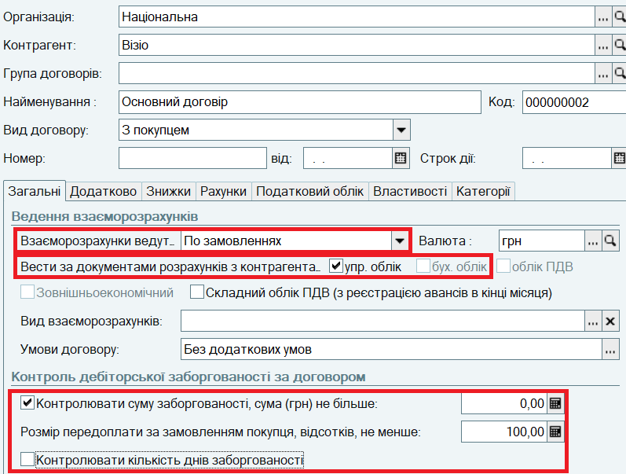
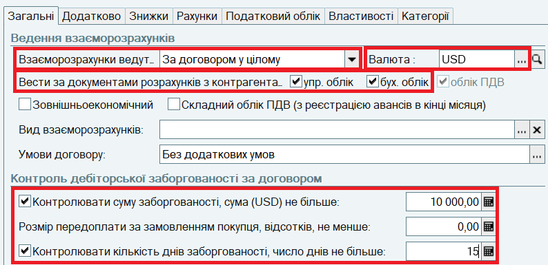

(або клавішу Insert або виберіть пункт меню Дії — Додати). У вікні, що відкрилося, на закладці Загальні заповніть основні відомості про контрагента:
(або клавішу Insert або виберіть пункт меню Дії — Додати). У вікні, що відкрилося, на закладці Загальні заповніть основні відомості про контрагента: 1. Відкрийте список контрагентів торгового підприємства. Для цього виберіть в меню Довідники пункт Контрагенти.
| ПРИМІТКА Контрагентами організації можуть бути юридичні особи і фізичні особи (в т.ч. ФОПи). Список контрагентів загальний для всіх організацій торгового підприємства, наявних в інформаційній базі. |
2. В списку Контрагенти створіть групу "Постачальники".
Для додавання групи натисніть кнопку в командній панелі форми списку (або виберіть пункт меню Дії — Нова група). Введіть Найменування групи "Постачальники".

3. Натисніть кнопку ОК.
4. Аналогічним чином додайте до списку контрагентів групи "Покупці" і "Комісіонери".
5. Зайдіть в групу "Постачальники", клацнувши по ній двічі.
6. Додайте нового постачальника до списку. Для цього натисніть в командній панелі форми списку кнопку (або клавішу Insert або виберіть пункт меню Дії — Додати). У вікні, що відкрилося, на закладці Загальні заповніть основні відомості про контрагента:

6. Натисніть кнопку Записати у правій нижчій частині форми Контрагенти.
7. Перейдіть на закладку Рахунки й договори. Для контрагента автоматично створено один договір "Основний договір" виду З постачальником.
8. Відкрийте форму Договір контрагента для введення відомостей про договір з постачальником. Для цього клацніть двічі по рядку "Основний договір" (або натисніть кнопку або виберіть пункт меню Дії - Змінити). У вікні Договір контрагента, що відкрилося, заповніть інформацію про договір:

9. Натисніть кнопку ОК в формі Договір контрагента для збереження відомостей про договір в інформаційній базі та закриття форми.
10. Натисніть кнопку ОК в формі Контрагенти для збереження відомостей про постачальника в інформаційній базі та закриття форми.
11. В групу "Покупці" додайте двох контрагентів з різними параметрами розрахунків. Додавання покупців здійснюється аналогічним чином, але має бути встановлений прапор Покупець. При запису контрагента автоматично створюється договір виду З покупцем.
12. Продаж покупцю "Візіо" здійснюється на умовах 100% передоплати за прийнятим замовленням. Встановіть для нього відповідні параметри договору:

13. Продаж покупцю "Будівельник" здійснюється на умовах товарного кредиту на суму до 10000 доларів, заборгованість має бути погашена протягом 15 днів. Встановіть для нього відповідні параметри договору:

| ПРИМІТКА Для кожного контрагента може бути зареєстровано будь-яка кількість договорів з різними параметрами взаєморозрахунків. Той самий контрагент може бути покупцем і постачальником. Можуть бути зареєстровані договори одного контрагента з різними організаціями торгового підприємства. |
Наступний розділ: "Відображення торгівельних операцій з допомогою документів"